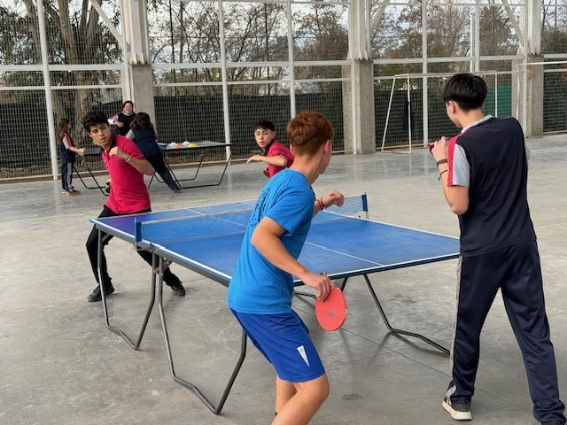
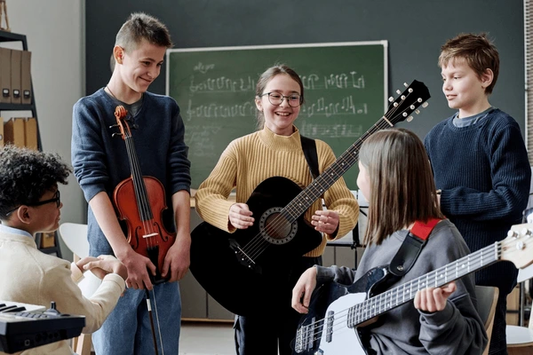

Este portal ha sido creado con el objetivo de dar a conocer y destacar los talentos de estudiantes en las áreas de música y deportes. Aquí podrás encontrar a distintos alumnos que se destacan por sus habilidades, esfuerzo y dedicación en estas disciplinas. A través de este sitio, se busca motivar a otros estudiantes a desarrollar sus propios talentos y reconocer el trabajo de quienes sobresalen en la comunidad escolar. Además, en las distintas páginas podrás conocer más en detalle a cada uno de estos alumnos destacados, donde se presentan breves descripciones de sus habilidades y logros.